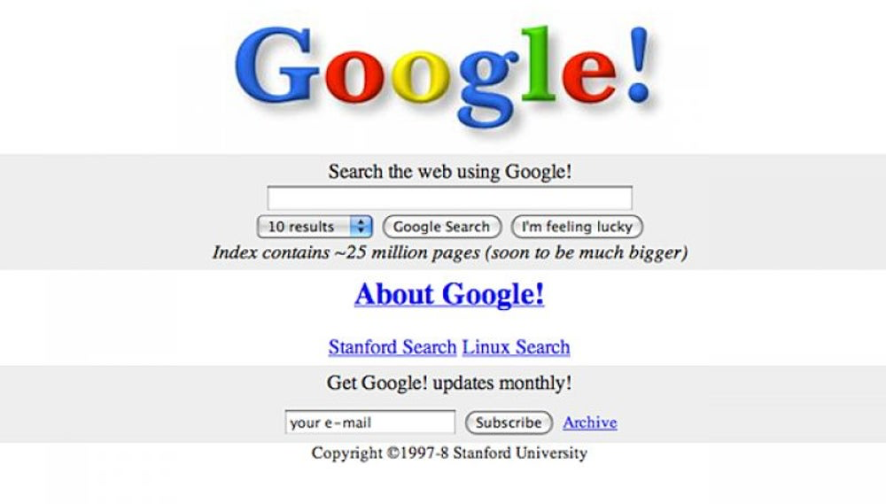
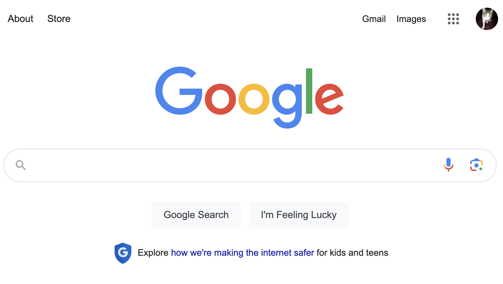
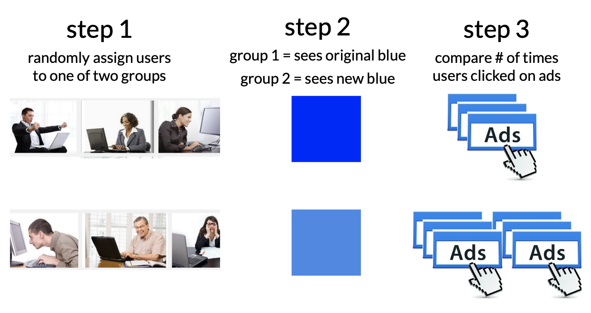
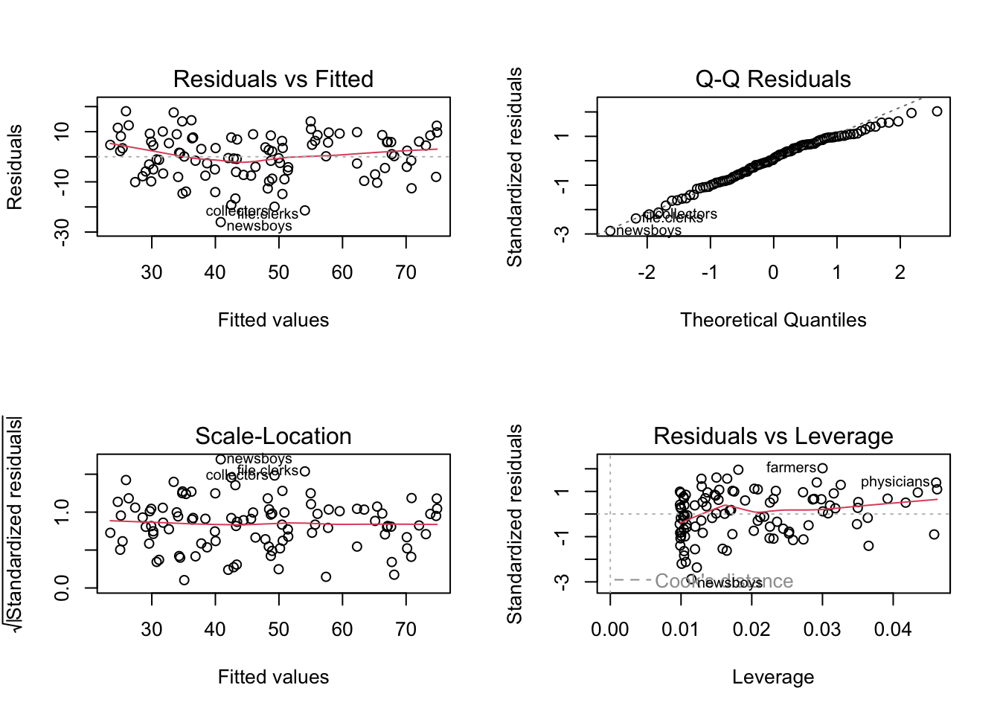
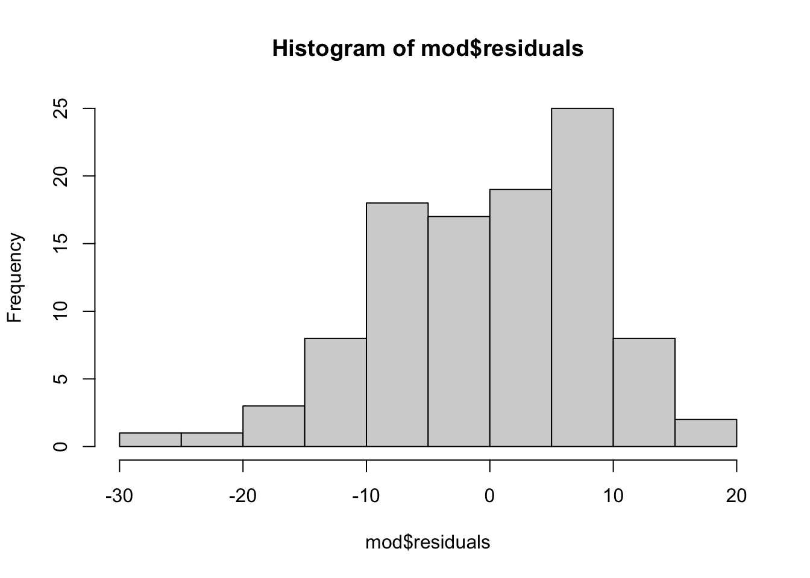

par(mfrow = c(1,1))
plot(prestige ~ education, data = presto,
ylab = "Prestige (Raw Units)",
xlab = "Education (Years)")
mod <- lm(prestige ~ education, data = presto)
abline(mod, lwd = 5, col = 'red')
Last chapter, we learned the “four reasons” why you might find a “pattern in the data” (another way of saying why “correlation does not equal causation”. However, scientists and psychologists often want (or need) to establish causation, and an experiment is the “gold standard” approach for how to do this.
Scientists and psychologists often want (or need) to establish causation, and an experiment is the “gold standard” approach for how to do this.
I’m guessing y’all have learned about experiments in many other classes, so won’t spend pages and pages and pages going over it again here.1
Here’s a supplemental chapter on experiments that reviews some key terms you should be familiar with : experimental manipulation; extraneous variables as “noise”; random assignment; placebo effects; external validity; construct validity; experimenter expectancy effects.
[^1] but remember, life is complex and there are often multiple causes of human behavior!
When I worked at Google as an intern for one summer2, corporate PR told a story about their “data driven approach”, where no decision was left to mere chance. Even something as simple as the color font they used could be the focus of an analytic research question.
| Google Homepage : Before Experiments | Google Homepage : After Experiments |
 |
 |
Watch the video below. You can read more about this study here.

Then, see if you can identify the different parts of an experiment.
linear model : DV ~ IV (what was manipulated) + confound variables + error
manipulation : what were the treatment and control groups?
random assignment : how were confound variables balanced across conditions?
double-blind : did the study avoid demand characteristics & placebo effects?
generalizability : did the study have external validity? what was the effect size (R2)?
ethics : should researchers do this type of study [predict & control]
linear model : number of ads that peopled clicked on ~ shade of blue people saw + age + location + income + education + media literacy + relevance of the ad + etc + error
manipulation : “control” group = shade of blue (existing shade of blue); treatment group = shade of blue.
random assignment : participants were randomly assigned to see links in one shade of blue or another. because this was randomly assigned, all the other differences between people (those variables that might affect the DV, such as age or location) are “balanced out”.
double-blind : the participant didn’t know that google was manipulating the shade of blue to get them to click on ads. the website (google) doesn’t know whats going on.
generalizability : yes, high external validity! Google was changing its own website. an example of low external validity would be printing out a sheet with different shades of blue that users “click” on with their finger.
ethics : WOULD LOVE TO HEAR FROM Y’ALL : do you think it’s ethical for companies like Google to do this research???
The interpretation of our linear models depends on a variety of different assumptions being met. You can read more about these from the great Gelman & Hill’s textbook : Data Analysis Using Regression. But below is a TLDR, with a few ideas of my own thrown in.
AUTHOR’S NOTE : this is a pretty incomplete part of the textbook; could probably use a few examples. on the very long to-do list!
Validity. Is your linear model the right model to answer the research question that you have? This is the big question, and often goes beyond the specific statistics that we are focusing on. Did you include the right variables in your model, or are you leaving something out? Are you studying the right sample of people, drawn from the right population? Are your measures valid? This is hard to do, and good to remember that it is hard so you ask yourself “am I doing a good job”?
Reliability of Measures. The variables in your linear model should be measured with low error (“garbage in, garbage out”). There are different ways to assess reliability.
Cronbach’s alpha (psych::alpha()) is good for assessing the inter-item reliability of a likert scale.
The Intraclass Correlation Coefficient (ICC) is often used for observational ratings where multiple judges form impressions of the same target.
Test-retest reliability is a great way to ensure that physiological or single-item measures will yield repeatable measures over time (assuming the target of measurement has not changed between time points). One way to test this is to define a linear model to predict the measure at one time point from the measure at another; you’d expect to see a strong relationship.
Independence. This is a big one - the residuals in your model need to be unrelated to each other. That is, I should not be able to predict the value of one error from another error. When the data in a linear model come from distinct individuals who are unrelated to each other, this assumption is usually considered to be met. However, there are often types of studies where the data are not independent.
Nested Data : Often times, individuals in a dataset belong to a group where there’s a clear dependence. For example, the happiness of individual members of a family is probably dependent on one another (since they share the same environment, stressors, etc.); the test-scores of children in a school are probably all related to each other (since they share the same teachers, administrators, funding, lead exposure in the drinking water, etc.)
Repeated Measures : If a person is measured multiple times, then their data at one time point will be related to their data at the second time point, since they are coming from the same person, with the same past experiences and beliefs and genetics and all that other good stuff.
If the data are not independent, then we will need to account for the dependence in the data. We will learn to do this when we review Multilevel Linear Models. (Spoiler : it’s more lines.)
Linearity. The dependent (outcome) variable should be the result of one or more linear functions (slopes). In other words, the outcome is the result of a bunch of straight lines. If the straight lines don’t properly “fit” or “explain” your data, then maybe you need some non-straight lines…you could bend the line (add a quadratic term), look for an interaction term (that tests whether there’s a multiplicative relationship between the variables), or apply a non-linear transformation to the data (i.e., often times income is log transformed, since a 9,000 point difference between 1000 and 10,000 dollars/month is not the same as a 9,000 point difference between 1,000,000 and 1,009,000 dollars/month).
Equal Variance of Errors (Homoscedasticity). The errors associated with the predicted values of the DV (the residuals) should be similar for all different values of the IV. Homoscedasticity means that the residual errors in our outcome variable are distributed the same across the different values of the IV. Heteroscedasticity means there is some non-constant variability in errors, which means that your model may not be an appropriate explanation of the data.
Normality of Errors (Residuals and Sampling). This assumption is less emphasized as our datasets have gotten larger, and methods for estimating sampling error have improved. But the basic idea is that statistics like confidence intervals and estimates of slopes assume that the errors in our model are normally distributed. If they are not, it’s likely that your model is not appropriately fitting the data (i.e., maybe some outliers are influencing the results.)
Let’s work with our basic linear model from previous chapters :
par(mfrow = c(1,1))
plot(prestige ~ education, data = presto,
ylab = "Prestige (Raw Units)",
xlab = "Education (Years)")
mod <- lm(prestige ~ education, data = presto)
abline(mod, lwd = 5, col = 'red')
Assumptions 1-3 require critical thinking about your methods and measures.
Assumptions 4 and 5 can be examined using the plot() function in base R - you may have accidentally come across these when trying to graph your linear model.
We talked about how to interpret these plots a little in lecture; here’s another tutorial that walks through the interpretation. Let us know (on Discord!) if you find another good example / explanation.
par(mfrow = c(2,2))
plot(mod)
Assumption 6 can be examined by graphing the residuals of your model object with a histogram.
par(mfrow = c(1,1))
hist(mod$residuals)
I’ll just spend pages going over it. Hah hah.↩︎
well-fed; gratuitously paid; soul-drained. I was in their “People Operations” (/HR) department, helping them set up longitudinal surveys and do various other research projects on compensation, appreciation, and diversity that helped feed the corporate beast.↩︎